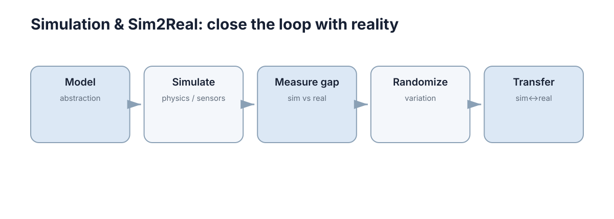

Simulation & Sim2Real
仿真部分关注如何建立可计算模型、模拟机器人和传感器，并理解仿真与真实世界之间的 Reality Gap 以及迁移方法。
仿真的价值不在于把现实世界完整搬进计算机，而在于用可控、可重复、可批量采样的近似模型，把“在真机上试错”换成“在模型里试错”。 因此这一节真正要回答的不是“怎样装一个模拟器”，而是三个更尖锐的问题：什么样的近似对当前任务是够用的？近似在哪里、以什么方式失效？失效之后，我们凭什么相信策略能安全地迁移回真机。

本节要解决的问题
仿真的常见困境不是“没有模拟器”，而是“不知道模拟器的结论能信到什么程度”。一个能在 MuJoCo 里稳定行走的控制器，换到真机可能因为 20 ms 的额外延迟直接摔倒；一个在 Gazebo 里 100% 成功率的抓取策略，可能只是因为接触摩擦被判成了理想静摩擦。这类问题有共同的结构：模型某处失真，而失真恰好落在任务最敏感的方向上。
所以本节把“仿真”拆成可分别检查的四层：物理模型是否覆盖了关键效应、传感器接口是否复现了实机语义、Reality Gap 能否被度量、以及迁移是否有闭环修正手段。只有这四层都被显式讨论过，仿真结果才是一份证据，而不是一个动画。
这套拆法也解释了为什么“换一个更强的模拟器”通常解决不了问题。更强的模拟器可能让渲染更逼真、接触更平滑，但它不会自动告诉你哪个参数对任务最敏感、哪个接口语义和实机不一致。判断力来自对任务与模型边界的对照分析，而不是来自软件版本的更新。
| 典型问题 | 表面现象 | 根因所在 |
|---|---|---|
| 仿真里收敛、真机上振荡 | 控制器增益“到真机就抖” | 执行器延迟、接触刚度未建模 |
| 策略只在测试场景成功 | 换纹理、换光照就崩 | 感知分布覆盖不足，缺域随机化 |
| 仿真训练耗时长 | 单机跑一周才出结果 | 步长、并行度与实时因子未优化 |
| 代码迁移要大量改动 | 仿真接口与实机不一致 | 坐标系、时间戳、订阅频率语义不同 |
| 结果无法复现 | 同参数换引擎结论不同 | 接触求解器与积分器假设不同 |
| 无法评估安全边界 | 只测了理想传感器 | 缺失效、饱和、丢帧等异常路径 |
值得注意的是，这些问题很少以“物理错误”的面貌出现。它们更常见的伪装是：超参数需要反复调到很窄的区间才成立、对初始条件极其敏感、现象在换一台机器或换一个引擎后消失。当出现这些信号时，第一反应不应该是继续调参，而是回头检查模型边界是否与任务匹配。
四章的推进逻辑
四章不是并列的知识点清单，而是一条单向加深的链条：物理建模 → 机器人与传感器仿真 → Reality Gap 与随机化 → Sim2Real/Real2Sim 闭环。链条的每一环都在回答上一环遗留的问题。
第一步是物理建模。任何仿真都要先决定“世界由什么组成、以什么方程演化”，这一步决定了后续所有数值的物理意义。第二步是机器人与传感器仿真，它把抽象的物理世界接到具体的算法输入上：机器人有无可运动结构、传感器输出是否带有噪声、偏置、延迟和正确的坐标系。第三步度量 Reality Gap 并用域随机化把“单一模型”扩展成“模型分布”，从而让策略对参数不确定性不敏感。第四步才是闭环：要么把仿真里学到的策略迁移到真机（Sim2Real），要么用真机数据修正仿真参数（Real2Sim），两者互为校验。
| 步骤 | 对应章节 | 输入 | 输出 |
|---|---|---|---|
| 1. 物理建模 | 建模与物理仿真 | 任务需求、硬件参数 | 可积分的动力学模型 |
| 2. 本体与传感器 | 机器人与传感器仿真 | 模型 + 传感器规格 | 带语义的观测流 |
| 3. 度量与随机化 | Reality Gap 与域随机化 | 仿真与真机数据 | 差距度量 + 参数分布 |
| 4. 闭环迁移 | Sim2Real 与 Real2Sim | 策略 + 修正后的模型 | 可部署策略、迭代闭环 |
这条链条的隐含前提是：误差会被逐级放大，所以越早的环节越值得较真。 如果在第一步把摩擦设成理想静摩擦，第三步无论堆多少随机化都只是在一个错误的世界里做统计；如果在第二步把时间戳语义做错，第四步的闭环校正会被系统性偏差带偏。
同时要记住链条不是瀑布式的：Real2Sim 会把真机数据回灌到第一步的参数与第二步的传感器模型，因此后一环的发现会反过来修改前一环的实现。实践中常见的做法是让模型参数带有明确的“可辨识清单”——哪些参数能从真机数据估计（如摩擦系数、延迟），哪些只能靠手册或猜测（如惯量细节），前者做成可回修的接口，后者直接纳入随机化分布。
这样看，四章的阅读顺序也是一个小型循环：先理解建模与积分，再理解传感器语义，接着理解差距度量，最后用闭环把前三者的残余误差压下去。每读完一章，最好都能回答“这一章留下的最大不确定性是什么”，它恰好就是下一章的主题。
概念地图
首页配图 sim2real-map.svg 用五个节点把这条链条画成了一个环，逐个节点看它的含义会更清楚。
第一个节点是 Model / abstraction（建模与抽象）：把连续、连续接触、无限细节的现实世界压缩成有限自由度的刚体与约束。抽象本身就是一次取舍，图上把它放在最前，是因为后面所有误差都源于这次压缩，而不是源于代码 bug。
第二个节点是 Simulate / physics / sensors（仿真物理与传感器）：在抽象之上推进时间、求解接触、生成观测。它对应第一、二章的工程实现，是唯一“可执行”的节点。
第三个节点是 Measure gap / sim vs real（度量差距）：把仿真输出与真机数据放到同一坐标系、同一指标下比较。图上的这个节点是整张图中最容易被跳过、却最关键的一环——没有度量，随机化就只是盲目加噪声。
第四个节点是 Randomize / variation（随机化）：既然差距无法消除，就把它显式地变成参数分布，让策略在分布上而非单点上成立。它直接引出域随机化与鲁棒性训练。
第五个节点是 Transfer / sim↔real（迁移与闭环）：箭头从仿真指回真机，也从真机指回仿真，这正是 Sim2Real 与 Real2Sim 的双向含义。图把 Transfer 画在末端而非起点，强调迁移是整条链条的结果，而不是一个可以单独插上的模块。
| 图中节点 | 含义 | 落到哪一章 |
|---|---|---|
| Model / abstraction | 现实世界到可计算模型的压缩与取舍 | 建模与物理仿真 |
| Simulate / physics / sensors | 时间推进、接触求解、观测生成 | 机器人与传感器仿真 |
| Measure gap / sim vs real | 同指标下比较仿真与真机差距 | Reality Gap 与域随机化 |
| Randomize / variation | 把差距转成参数分布做鲁棒训练 | Reality Gap 与域随机化 |
| Transfer / sim↔real | 策略迁移与模型回修的双向闭环 | Sim2Real 与 Real2Sim |
把这张图和四章对照起来看，会发现图中省略了一个重要的隐含节点：Step（时间推进）。它不显式出现，却贯穿 Model 与 Simulate 之间——现实中连续的演化是被离散成有限步长执行的，而步长本身就是精度与算力的折衷点。第一章会花大量篇幅讨论这个折衷，因为它是所有后续数值结果的分母。
另外，图上的箭头方向值得注意：Measure gap 指向 Randomize，而不是反过来。这意味着随机化的范围应该由度量结果决定——如果真机与仿真的差距主要来自延迟，就应该优先随机构化延迟项，而不是盲目放大所有参数区间。度量驱动的随机化才是有效随机化。
与其他章节的接口
仿真章节的概念几乎都是“为别的章节服务”的：它提供数据、接口和测试环境，本身很少是被评估的终点。因此读这一节时，最好同时想清楚它把哪个概念交给了哪一章。
例如物理参数随机化最终服务于强化学习里的鲁棒性：训练时把质量、摩擦、延迟当作分布采样，学到的策略才对参数漂移不敏感，这正是 安全、鲁棒与离线强化学习 讨论的风险敏感与离线训练问题。传感器噪声与多模态融合的关系同理：只有仿真里先给出带噪声、带时间戳、可能缺失的多路观测，多模态感知 的融合逻辑才有可检验的输入。
接口一致性则属于软件工程的范畴。如果仿真的 Topic 名、frame 名、消息字段与实机不同，迁移成本会体现在每一行胶水代码里，模块化与接口设计 讨论的“稳定接口 + 可替换实现”正是对抗这种成本的手段。
| 仿真概念 | 用在哪一章 | 解决什么问题 |
|---|---|---|
| 物理参数随机化 | 安全、鲁棒与离线强化学习 | 让策略对质量、摩擦、延迟漂移鲁棒 |
| 传感器噪声与延迟 | 多模态感知 | 检验融合算法在不完美观测下的表现 |
| 接口一致性（Topic/frame/字段） | 模块化与接口设计 | 降低仿真到实机的代码改动量 |
| 运动学与动力学模型 | 机器人建模：运动学与动力学 | 为控制器与状态估计提供共享模型 |
| 带噪里程计与扫描 | 建图与 SLAM | 在可控噪声下验证建图与定位鲁棒性 |
| 相机内外参与渲染 | 图像与相机基础 | 打通渲染图像与几何投影的一致性 |
| 不确定性建模与偏移 | 不确定性与分布偏移 | 用仿真注入分布偏移做安全评估 |
还有两条接口容易被忽略。其一是仿真与 建图与 SLAM 的关系：仿真能提供带真值的位姿与地图，让定位误差可以被分解为“前端匹配误差”和“后端优化误差”，这在真机上几乎无法做到。其二是仿真与 图像与相机基础 的关系：如果渲染出的相机内外参与投影公式不一致，用仿真训练的视觉模块就等于在一个错误的相机模型上学。
把这些接口列成表的意义在于：仿真章节的产出物大多是“给别的模块用的数据契约”，而不是独立结论。评估仿真做得好不好，最终看的是下游模块在真机上是否少改代码、少调参、少翻车。
仿真的成本与收益
仿真不是免费的：它用“模型风险”换掉了“硬件风险”。收益侧非常直观——不需要真机就能跑上万次试验、可以在危险场景里试错、可以精确记录每一帧状态、可以让实验可复现。但代价侧同样真实：一张好看的速度曲线可能只是求解器数值稳定的产物，与物理可信度无关；一次高成功率可能只是测试分布过于单一。
判断仿真是否值得，关键是问一句“我这次试验的结论，是否依赖于模型中我无法验证的部分”。如果依赖，那么仿真结论必须打上问号；如果不依赖，仿真可以放心地当作加速器使用。
| 仿真省掉了什么 | 仿真引入了什么新风险 |
|---|---|
| 真机磨损与坠机成本 | 模型失真被误当作物理规律 |
| 大量人力值守与场地占用 | 接触/摩擦求解器差异导致的引擎依赖 |
| 危险场景的试错风险 | 过度随机化掩盖了模型本身的错误 |
| 不可复现的手动实验 | 数值不稳定产生的“假成功” |
| 无法获取的真值状态 | 真值标签使算法脱离实际可观测性 |
一个实用的衡量方式是“单位真机小时的仿真收益”：如果仿真把一次实验从需要 30 分钟真机值守压缩到 3 秒计算，同时又让结论的可信度下降到需要额外 5 次真机验证才能确认，那么净收益取决于这 5 次验证能否覆盖关键不确定性。当验证成本接近直接做真机实验时，仿真就退化成了可视化工具。
什么时候不该用仿真
反向判断同样重要。当任务的关键瓶颈无法在模型中表达时，继续投入仿真只会放大偏差。典型情形是：任务成败取决于真实接触的微观机理（如软体抓取、沙地行驶）、取决于真实光学噪声特性（如低照度成像）、或取决于真机特有的时序抖动。这些情况下更合理的做法是缩小仿真范围——只仿真验证算法逻辑，把物理可信度交给真机小样本验证，而不是追求“全流程仿真复现”。
| 场景 | 为什么仿真不可靠 | 替代做法 |
|---|---|---|
| 软体与可变性物体抓取 | 接触形变机理难以精确建模 | 仿真只验证规划，真机做小样本 |
| 极端光照/低照度成像 | 渲染噪声分布与真实相机差异大 | 用真实数据集 + 仿真做域随机化补充 |
| 高频力控与抖动 | 延迟与采样抖动难以复现 | 直接上真机做参数扫描 |
| 长时漂移与老化 | 时变参数不在模型分布内 | 在线辨识 + 真机长期记录 |
这里也隐藏着一个容易走偏的判断：仿真“跑不通”不等于任务“不可行”，反过来仿真“跑得通”也不等于任务“已解决”。前者说明模型或参数设置有问题，后者说明模型没有被逼到它的边界。真正有信息量的结果是“仿真里只在某些参数区间成功、在某些区间失败”，因为它同时给出了能力范围和失效边界。
本章导航
| 章节 | 主题 | 一句话概括 |
|---|---|---|
| 建模与物理仿真 | 物理世界如何变成可计算模型 | 积分器、接触模型、实时因子决定仿真的数值可信度 |
| 机器人与传感器仿真 | 模型如何接到算法输入上 | 传感器误差分层与坐标/时间戳语义决定迁移成本 |
| Reality Gap 与域随机化 | 差距如何度量并被吸收 | 用分布代替单点模型，换取鲁棒性 |
| Sim2Real 与 Real2Sim | 如何形成闭环 | 策略迁移与模型回修互为校验 |
四章合起来构成一句完整的判断：模型要够用、接口要一致、差距要可度量、迁移要可回修。 只做到前两条，仿真是一套漂亮的演示；补上第三条，仿真才有资格作为证据；再补上第四条，仿真才能长期稳定地支撑真机开发。阅读时不妨把这句话当作检验清单，每读完一章回来对一遍，看看还有哪一条没有落到实处。
下一步：先读 建模与物理仿真 建立“什么是够用的模型”的判断标准，再读 机器人与传感器仿真 理解观测语义，之后进入 Reality Gap 与域随机化 与 Sim2Real 与 Real2Sim 完成闭环。